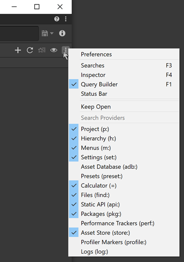

Filtering narrows the scope of your searches to specific providers. You can filter searches in the following ways:
Set up persistent search filters to control which providers Search uses for regular searches.
Use a Search Provider’s search token in the search field to only display results from that provider.
Limit your search results by using sub-filters and query operators and using the keywords available for your index.
See a list of additional search filters here.
You can temporarily toggle Search Providers on and off from the Filters pane. This can help reduce the number of items that a search returns, which is convenient if you already know what type of item you are looking for. The providers that are toggled on at any given time are the active Search Providers.

Search Providers drop-down menu
To set persistent search filters:
Every Search Provider has a unique text string called a search token, also called a filter ID. When you prefix a search query with a provider’s search token, Search limits the scope of the search to that provider.
For example, p: is the search token for the Asset Search Provider. When you enter p:Player in the search field, Search searches for Assets that match the term “Player” (for example, assets with “Player” in their names).
See Search Providers for a list of search tokens for Search Providers.
See Additional search tokens for a list of search tokens for PrefabsAn asset type that allows you to store a GameObject complete with components and properties. The prefab acts as a template from which you can create new object instances in the scene. More info
See in Glossary, Files, Types, Properties, and Dependencies searches.
You can combine search tokens to create more complex queries.
Here are a few examples:
| Query | Description |
|---|---|
h: t:meshrenderer p(castshadows)!="Off" |
Searches all static meshes in a SceneA Scene contains the environments and menus of your game. Think of each unique Scene file as a unique level. In each Scene, you place your environments, obstacles, and decorations, essentially designing and building your game in pieces. More info See in Glossary that cast a shadow. |
h: t:light p(color)=#FFFFFF p(intensity)>7.4 |
Searches all lights in a Scene with a specific color with brightness higher than 7.4. |
h: path:/Collectables t:collectable |
Find all objects with a component Collectable located in the path /Collectables.
|
Search expressions allow you to add to the search query language to express complex queries that cross-reference multiple providers, for example, to search for all objects in a scene that use a shaderA program that runs on the GPU. More info
See in Glossary that doesn’t compile. See Search expressions for more information.